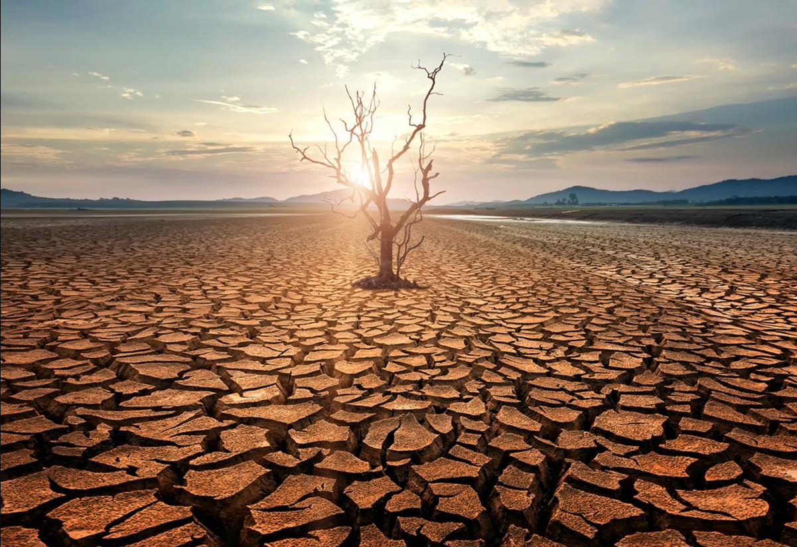

01 - EL PROBLEMA
¿Qué es y cuáles son sus causas?
El cambio climático es la modificación de las temperaturas y de los patrones del clima durante períodos prolongados. Aunque puede producirse por causas naturales, actualmente está relacionado principalmente con las actividades humanas.
La quema de combustibles fósiles genera gases de efecto invernadero que retienen más calor en la atmósfera. Esto provoca un aumento de la temperatura del planeta.
Principales causas:
- Contaminación de fábricas y vehículos.
- Deforestación y tala excesiva de árboles.
- Quema de petróleo, carbón y gas.
- Emisiones producidas por la agricultura y ganadería.
02 - LO QUE ESTÁ PASANDO
Consecuencias globales
El cambio climático afecta a todos los seres vivos y produce alteraciones en los ecosistemas. Sus efectos pueden variar según la región, pero algunos se observan en distintas partes del mundo.
Entre sus principales consecuencias encontramos:
- Aumento de las temperaturas y olas de calor.
- Sequías que afectan el agua y los cultivos.
- Inundaciones y tormentas intensas.
- Derretimiento de glaciares y aumento del nivel del mar.
- Pérdida de especies y biodiversidad.
En Argentina también se observan efectos como períodos de sequía, temperaturas elevadas e inundaciones en diferentes zonas del país.

03 - PASAR A LA ACCIÓN
Acciones y soluciones
Para reducir el impacto del cambio climático es necesario cambiar algunos hábitos y promover medidas que protejan al ambiente. Tanto las personas como los gobiernos pueden colaborar.
¿Qué podemos hacer?
| Nivel | Acción | Impacto |
|---|---|---|
| Individual | Ahorrar agua y electricidad. | Reducir el consumo de recursos. |
| Comunitario | Separar residuos y reciclar. | Disminuir la cantidad de basura. |
| Global | Utilizar energías renovables. | Reducir las emisiones contaminantes. |
No hace falta cambiar el mundo de un día para el otro. Podemos empezar cambiando nuestros propios hábitos.
04 - SUMATE AL CAMBIO
Sumate al cambio
Informarse es el primer paso para hacer algo diferente. Dejanos tus datos para mostrar tu interés en el cuidado del ambiente y formar parte de una comunidad más consciente.